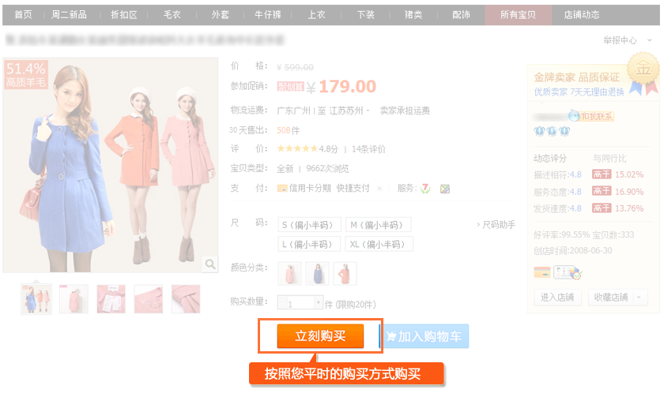
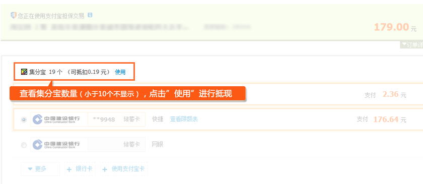
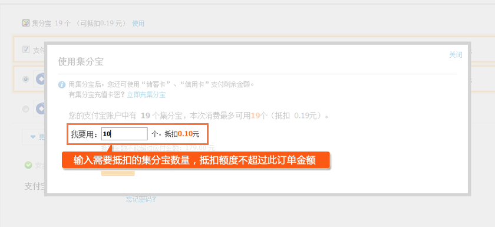
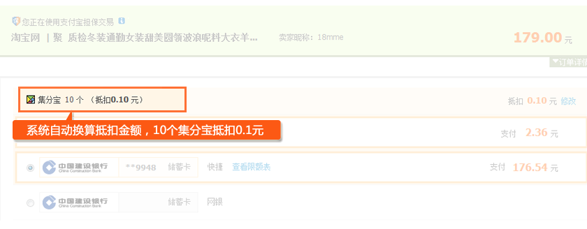
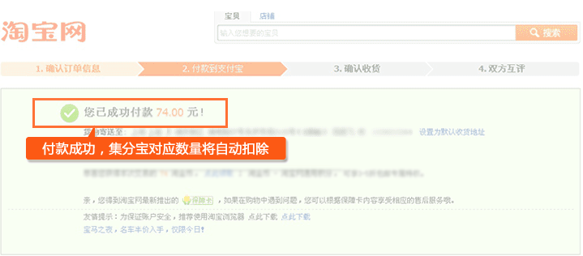

一、什么是支付宝集分宝？返利兑换集分宝有什么好处？
集分宝是由支付宝提供的积分服务，具有现金价值，100个集分宝可抵扣1元钱。
集分宝可以直接当现金花，而且用途范围很广。主要有以下几种：
1、支持在淘宝网、天猫商城等网站抵现金购物；
2、支持还信用卡、缴水电煤；
3、兑彩票/礼品；
4、给需要帮助的人们捐款，贡献一份爱心。
亲爱的点心们：
自2013年1月4日起，淘宝返利将由返现到支付宝账户升级为返现到支付宝集分宝(支付宝现金积分)，返现到账时间不变。
为了共建良好的返利行业环境，保障广大消费者的权益，淘宝联盟在与点点折等品牌返利网站共同商讨之后，于2012年底出台了关于返现金类型导购网站的升级和建议。 针对此次升级建议，点点折已做好全方位准备工作，在点点折、淘宝网、支付宝等共同合作下，亲们在淘宝购物可照常获得返利。
集分宝是由支付宝提供的积分服务，具有现金价值，100个集分宝可抵扣1元钱。
集分宝可以直接当现金花，而且用途范围很广。主要有以下几种：
1、支持在淘宝网、天猫商城等网站抵现金购物；
2、支持还信用卡、缴水电煤；
3、兑彩票/礼品；
4、给需要帮助的人们捐款，贡献一份爱心。
集分宝使用场景较多，在支付宝收银台付款时，可抵扣相应现金。主要推荐以下使用方式：
您可以到淘宝网、天猫商城等网站购物，还可以通过支付宝还信用卡、缴水电煤。付款操作进行到支付宝收银台页面 时便均可进行抵现操作。

进入到支付宝收银台后，页面上部会显示可用集分宝数量(余额满10个便可抵现)，点击"使用"链接。

输入要抵现的集分宝数量，点击"确定"按钮。

系统自动换算抵扣金额，您可以继续往下付款，输入兑换后需支付的余额。

大功告成，付款成功后集分宝对应数量将自动扣除。如果付款失败，集分宝将不会扣掉，可以继续使用。

怎么样，集分宝很好用吧？
还不赶紧试试集分宝抵现金，让你网购省钱更便捷！